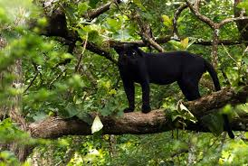
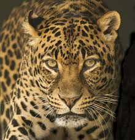

Leopards are facing many threats
Leopard skins and teeth are being traded in africa. Leopard poaching is common in asia. The IUCN lists leopards as near threatened and warns their population is rapidly disappearing.
How can we protect the leopards from extinction?
- Create and implement a joint strategy with all range countries to combat poaching and illegal trade of snow leopards.
- set up compensation schemes for farmers who lose livestock to snow leopards
- Reduce human leopard conflict.
- The activities of protected territories and hunting leases to advance leopard conservation be evaluated and that financial support for these organizations be found as part of a general leopard conservation program.
fun leopards facts
The cat has strong, short front limbs and longer hind limbs. They help launch the cat up to 30 feet in one leap.The leopard's climbing ability sets it apart from the other big cats and has made it the most successful of the group as far as its numbers in the wild.Their tree climbing prowess doesn't just give them the means to keep their kills safe, it also provides them a quick escape from the many animals on the African plains that can make life tough.From a distance, Black panthers appear to be solid black in color, but close up you can actually see black spots on the coat.
